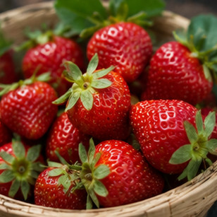

PEQUENOS PRODUTORES · RJ
O alimento
O alimento
tem origem.
A conexão,
também.
Um lugar para encontrar a colheita e conhecer as pessoas por trás dela. Do campo fluminense para novas possibilidades.

Produção próximaHistórias com
origemConexões possíveis
NA VITRINE / 02
Colheitas que merecem
Ver toda a vitrine ↗
Colheitas que merecem
um novo encontro.
Anúncios fictícios utilizados apenas para demonstrar as funcionalidades.
DADOS DO CAMPO / RIO DE JANEIRO
O agro fluminense
O agro fluminense
não cabe numa legenda.
Indicadores da fruticultura fluminense em 2024, segundo relatório da EMATER-RIO. Não são resultados do AgroConnect.
DO CAMPO À TELA / 03
É simples porque precisa ser.
Quem produz se apresenta.
Um perfil, uma história e uma pequena vitrine para divulgar a produção.
O consumidor encontra.
Filtros por produto, categoria e município para descobrir novas opções.
O interesse vira contato.
Uma solicitação demonstrativa que aproxima as duas pontas, sem pagamento real.
O AGROCONECT / NOSSO PROPÓSITO
Uma colheita não deveria terminar invisível.
Antes de um alimento chegar à mesa, existe uma história que a etiqueta de preço não conta: a terra preparada, o tempo respeitado e o trabalho de quem faz a colheita acontecer. O AgroConnect nasce para dar espaço a essas histórias.
Queremos que a distância entre o campo e a cidade seja menor, não apenas em quilômetros, mas em conhecimento e oportunidades. Porque valorizar a origem é reconhecer as pessoas por trás de cada alimento.
O AgroConnect ainda é um protótipo acadêmico. Perfis, anúncios e solicitações apresentados como exemplo são fictícios; não há pagamentos ou entregas reais.
ESTAÇÕES / RJ
Respeitar o tempo
Respeitar o tempo
também é cultivar.
Descubra os meses indicados no guia de sazonalidade usado pela Secretaria de Saúde do Rio de Janeiro e pela Firjan.
Abrir o calendário ↗